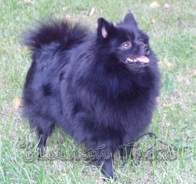

Порода: малый шпиц;
Дата рождения:;
Владелец: Лапшина Н.;
Титулы: Чемпион России, Чемпион НКП;
|
Веселый Гном Юджина |
||
| Интерчемпион, Ч.России,Гранд,НКП ВЕСЁЛЫЙ ГНОМ ЭМИНЕНТ ЭЛЬ |
Интер,Ч.Мира,Австрии,Польши,России Kontrapunkt Vis Major (Польша) |
CH Polska Khanor the Bees Knees |
| CH Polska Soffies Mumme |
||
| Ч.России,НКП Весёлый Гном Хлоя |
Ч.России Mark od Templarskych Rytiru | |
| Весёлый Гном Еничка | ||
| Ч.России ВЕСЁЛЫЙ ГНОМ ИЯ | Генрих |
Sir Lucky (США) |
| Глафира |
||
| Весёлый Гном Делия |
Aconny z Rozpaku (Чехия) |
|
| Грейс Штеффи |
||